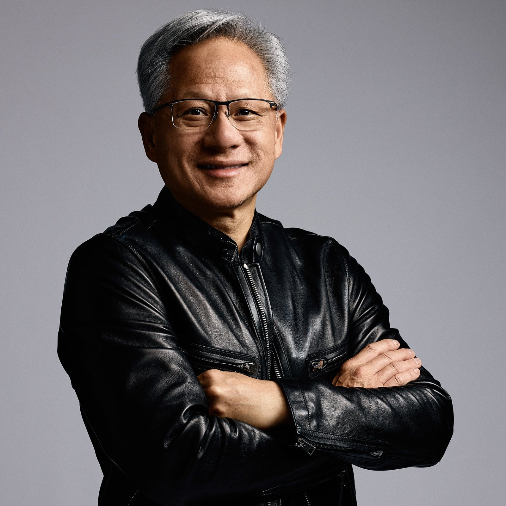

NVIDIA Reverses Jensen Huang's Exit as Leadership Controversy Takes New Turn
Business
The return of NVIDIA founder Jensen Huang has brought an abrupt end to an 11-day leadership uncertainty at the artificial intelligence giant, but questions surrounding his departure continue to attract attention.
NVIDIA has reinstated Jensen Huang as its chief executive, reversing a decision that briefly placed the future leadership of one of the world's most influential technology companies in doubt. The board approved his return on November 23, 2026, allowing the company's co-founder to resume control after stepping aside earlier in the month.
Huang's departure followed growing scrutiny over allegations concerning his personal relationships and questions about possible exposure to foreign intelligence interests. One of the individuals mentioned in reports was Alice Huang, a Chinese businesswoman whose alleged connections to Chinese intelligence attracted attention from US authorities. These claims have not been established as proven espionage.
The leadership dispute also drew interest from Washington, where President Donald Trump reportedly encouraged NVIDIA's directors to reconsider their decision. Trump viewed Huang's continued leadership as important to America's position in the increasingly competitive global artificial intelligence industry.
For NVIDIA, the stakes extend beyond the appointment of an executive. The company supplies critical computing technology used to develop advanced AI systems, making its leadership and corporate stability important to investors, technology companies and governments around the world.
Following Huang's reinstatement, NVIDIA's board indicated that it had considered national security concerns and would continue examining reports of a possible foreign intelligence operation targeting the executive. The company has also faced renewed questions about its internal oversight and the protection of sensitive business information.
Huang's return restores familiar leadership at a time when demand for AI computing technology continues to reshape the global technology market. However, the decision leaves an important question hanging over the company: can NVIDIA move beyond the controversy while maintaining the confidence of investors, employees and international partners?